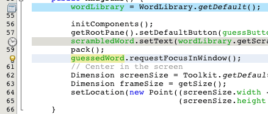
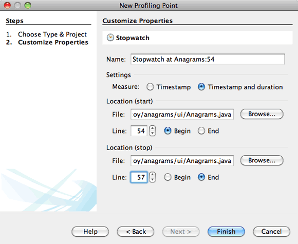
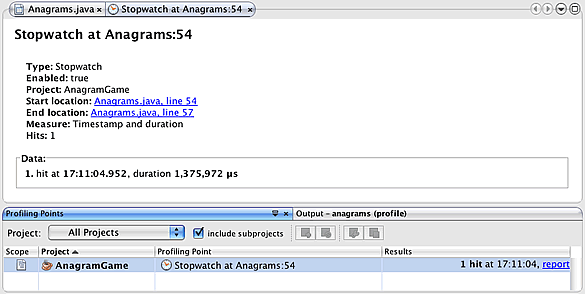
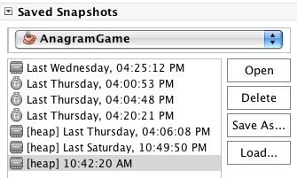

Apache NetBeans
Apache NetBeansLatest release
Usando Pontos de Criação de Perfil no NetBeans IDE
| This tutorial needs a review. You can edit it in GitHub following these contribution guidelines. |
O NetBeans IDE inclui uma poderosa ferramenta de criação de perfil que pode fornecer informações importantes sobre o comportamento de sua aplicação em runtime. A ferramenta de criação de perfis do NetBeans permite monitorar os estados dos threads, o desempenho da CPU e o uso de memória da aplicação dentro do IDE com custo adicional relativamente pequeno.
Este documento descreve como o uso de criação de perfis se destaca como uma alternativa para a definição e o controle da sessão de criação de perfis. Os pontos de criação de perfil são como pontos de interrupção do depurador de erros em que o código-fonte é diretamente colocado e de onde podem disparar o comportamento quando acionado. Quando você define um ponto de criação de perfil, ele se torna parte do objeto até que ele seja deletado. Você pode exibir, modificar e deletar os Pontos de Criação de Perfil em seus projetos na janela Pontos de Criação de Perfil.
Você pode usar pontos de criação de perfil para realizar as seguintes tarefas:
-
Redefinir resultados de criação de perfil
-
Obter um snapshot ou dump do heap
-
Registrar o timestamp ou tempo de execução de um fragmento de código
-
Iniciar e interromper um script do gerador de carga (requer o plug-in do gerador de carga)
Este documento demonstrará como usar os pontos de criação de perfil para obter dados de criação de perfil sobre a aplicação de amostra Jogo de Anagramas, uma aplicação Java simples incluída no IDE. Apesar do Jogo de Anagramas ser um projeto de aplicação Java bem simples, você pode seguir as mesmas etapas para a criação de perfil de aplicações Java maiores e mais complexos, assim como projetos de aplicações da web e corporativas.
Antes de começar este tutorial, talvez você queira se familiarizar com a utilização da ferramenta de criação de perfil, lendo a documentação a seguir.

Figure 1. O conteúdo desta página se aplica ao NetBeans IDE 7.2, 7.3, 7.4 e 8.0
Introdução
Pré-requisitos
Este tutorial pressupõe que você tenha algum conhecimento básico das tecnologias a seguir, ou alguma experiência de programação com elas:
-
Programação em Java
-
NetBeans IDE
Software Necessário para o Tutorial
Para este tutorial, você precisa ter instalado no computador os seguintes softwares:
| Software ou Recurso | Versão Necessária |
|---|---|
7.2, 7.3, 7.4, 8.0 |
|
Versão 7 ou 8 |
Observações.
-
A ferramenta de criação de perfil está incorporada no NetBeans IDE e nenhuma configuração especial é necessária para começar a criar o perfil de uma aplicação.
Conceitos Básicos sobre o Ponto de Criação de Perfil
Esta seção é um guia geral de como definir pontos de criação de perfil num projeto e como exibir e modificar pontos de criação de perfil existentes. Há diferentes tipos de pontos de criação de perfil e é possível selecionar um ponto de criação de perfil de acordo com o caso de uso. Um projeto pode ter um número diferente de pontos de criação de perfil associados. Você pode adicionar, excluir, ativar e desativar pontos de criação de perfil de acordo com as medidas que deseja obter durante essa sessão de criação de perfil.
Definindo um Ponto de Criação de Perfil
O modo mais fácil de definir um ponto de criação de perfil é no código-fonte na janela do editor. Basta selecionar a linha onde se deseja definir o ponto de criação de perfil e abrir a janela Novo Ponto de Criação de Perfil. Também é possível definir pontos de criação de perfil ao configurar as opções da sessão de criação de perfil.
-
Abra o arquivo de código-fonte que contém o código em que se deseja inserir o ponto de criação de perfil.
-
No editor de código-fonte, clique com o botão direito do mouse na linha em que deseja adicionar o ponto de criação de perfil e escolha Criação de Perfil > Inserir Ponto de Criação de Perfil para abrir o assistente de Novo Ponto de Criação de Perfil.
-
Selecione um tipo de ponto de criação de perfil e o projeto. Clique em Próximo.

Figure 2. Tela da caixa de diálogo Novo Ponto de Criação de Perfil
-
Insira um nome para o ponto de criação de perfil e personalize suas propriedades. Clique em Finalizar.
Quando você clica em Finalizar, aparece um ícone que representa o tipo de ponto de criação de perfil na margem esquerda do editor de código-fonte ao lado da linha em que inseriu o ponto de criação de perfil.

Figure 3. Anotações dos Pontos de Criação de Perfil na margem do editor de código-fonte
Ativando, Desativando e Editando Pontos de Criação de Perfil
Quando nenhuma sessão de criação de perfil estiver em execução, é possível editar, ativar e desativar pontos de criação de perfil individuais tanto no editor de código-fonte quanto na janela Pontos de Criação de Perfil. Para ver uma lista de todos os pontos de criação de perfil, abra a janela Pontos de Criação de Perfil escolhendo Janela > Criação de Perfil > Pontos de Criação de Perfil no menu principal. A janela Pontos de Criação de Perfil mostra o status dos pontos de criação de perfil no momento.
Quando uma sessão de criação de perfil estiver em execução, a janela Pontos de Criação de Perfil mostra quantas vezes cada ponto de criação de perfil foi acionado e permite exibir um relatório de resultados.

Figure 4. Tela da janela Pontos de Criação de Perfil
É possível navegar rapidamente até um ponto de criação de perfil no código-fonte abrindo-se a janela Pontos de Criação de Perfil e clicando-se com o botão direito no ponto de criação de perfil e selecionando-se Mostrar Código-fonte.
Para modificar o status ou as definições de um ponto de criação de perfil, execute uma das etapas a seguir.
-
No editor de código-fonte, clique com o botão direito no ícone do ponto de criação de perfil e selecione Pontos de Criação de Perfil no menu pop-up.
-
Na janela Pontos de Criação de Perfil, selecione um ponto de criação de perfil e usar a barra de ferramentas para editar, remover, ativar ou desativar o ponto de criação de perfil.
Ou então, clique com o botão direito no nome do ponto de criação de perfil e selecione um comando no menu pop-up.
Se você optar por editar um ponto de criação de perfil, será aberta a caixa de diálogo Personalizar Ponto de Criação de Perfil.

Figure 5. Tela da caixa de diálogo Personalizar Ponto de Criação de Perfil
Exibindo Pontos de Criação de Perfil Ativos em um Projeto
É possível usar pontos de criação de perfil ao analisar o uso de memória ou o desempenho da aplicação. Ao selecionar a tarefa de criação de perfil, você pode mostrar os pontos de criação de perfil ativos e ativados para a sessão de criação de perfil.
-
Clique com o botão direito do mouse no nó e escolha Perfil para abrir a caixa de diálogo Selecionar Tarefa de Criação de Perfil.
-
Selecione a tarefa de criação de perfil (CPU ou Memória).
-
Selecione Avançado (instrumentado).
-
Clique em Mostrar Pontos de Criação de Perfil ativos no painel de definições.
O link para mostrar pontos de perfil ativos só está disponível quando a opção de criação de perfil Avançado está selecionada.

Figure 6. Tela da caixa de diálogo Pontos de Criação de Perfil Ativos
Quando você clica em Mostrar Pontos de Criação de Perfil ativos, é aberta uma caixa de diálogo que lista todos os pontos de criação de perfil definidos no projeto. Os pontos de criação de perfil definidos, mas desativados ficam cinza.
Observação. Se quiser ativar, desativar ou personalizar as definições de um ponto de criação de perfil, abra a janela de Pontos de Criação de Perfil ou localize o ponto de criação de perfil no projeto.
Trabalhando com Pontos de Criação de Perfil
Nesta seção você criará um projeto de amostra e, em seguida, definirá diferentes pontos de criação de perfil no código-fonte. Este exercício demonstrará como usar os diferentes pontos de criação de perfil.
Criando o Projeto de Amostra
Neste documento você usará os pontos de criação de perfil ao criar o perfil da aplicação de amostra Jogo de Anagramas. Para fazer isto, primeiro use o assistente Novo Projeto para criar a aplicação de amostra.
Para criar a aplicação Jogo de Anagramas execute as seguintes etapas.
-
Escolha Arquivo > Novo Projeto no menu principal.
-
No assistente Novos Projetos, selecione a categoria Amostras > Java.
-
Selecione o projeto Jogo de Anagramas.
-
Selecione uma localização para o projeto. Clique em Finalizar.
Quando você clica em Finalizar, o IDE cria o projeto de amostra Jogo de Anagramas.
-
Escolha Executar >Definir Projeto Principal > Jogo de Anagramas do menu principal.
Depois que você definir o projeto como o principal você pode ver o nome do projeto Jogo de Anagramas em negrito na janela Projetos. Por default, ao usar o IDE para criar o perfil de um projeto, o IDE criará o perfil do projeto principal. Se nenhum projeto estiver definido como o projeto principal, o IDE irá criar o perfil do projeto selecionado na janela Projetos.
Medindo o Tempo de Execução de um Fragmento de Código
Usa-se o ponto de criação de perfil Cronômetro para recuperar timestamps quando o ponto de criação de perfil for acessado. Também é possível usar o ponto de criação de perfil de Cronômetro para medir quanto dura a execução de um fragmento de código calculando-se a diferença entre dois timestamps. É possível definir qualquer número de pontos de criação de perfil de cronômetro.
Ao definir um ponto de criação de perfil de Cronômetro, você escolhe um dos tipos a seguir.
-
Timestamp. Este tipo recupera um timestamp quando o ponto de criação de perfil for acessado.
-
Timestamp e Duração. Este tipo permite que você meça quanto tempo leva para executar um fragmento de código. Você especifica o fragmento de código que se deseja medir definindo um ponto de criação de perfil de Cronômetro no ponto em que deseja o início da medição e outro ponto de criação de perfil de cronômetro onde se deseja o término da medição. Os pontos de início e término do cronômetro são emparelhados por seus nomes.
Para medir o tempo de execução de um fragmento de código, execute as seguintes etapas.
-
Abra a classe
Anagrams.javano editor, expandindo o pacote do código-fontecom.toy.anagrams.uie clicando duas vezes emAnagrams.java. -
Localize a linha no código-fonte onde se deseja iniciar a medição - por exemplo, na linha 54.
-
Clique com o botão direito do mouse na linha e escolha Criação de Perfil > Inserir Ponto de Criação de Perfil no menu pop-up.
-
Selecione Cronômetro como Tipo de Ponto de Criação de Perfil. Clique em Próximo.
-
Selecione Timestamp e duração como Definição.
Quando escolher Timestamp e duração, a caixa de diálogo definirá automaticamente o cronômetro para iniciar no começo da linha de código até o final no término da linha seguinte. É possível modificar as linhas em que o cronômetro inicia e termina.
-
Modifique a definição de Localização (fim) para alterar a linha final para algumas linhas depois da linha de início. Clique em Finalizar.

Figure 7. Tela da caixa de diálogo Novo Ponto de Criação de Perfil
Quando se define o ponto de criação de perfil, as anotações do ponto inicial e do ponto final aparecem na margem esquerda do editor.

Figure 8. Pontos de criação de perfil ativos para a sessão de criação de perfil
Se você abrir a janela Pontos de Criação de Perfil verá que o ponto de criação de perfil do cronômetro é adicionado à lista.
-
Clique em Criação de Perfil do Projeto Principal na barra de ferramentas.
-
Na caixa de diálogo Selecionar Tarefa de Criação de Perfil, clique na tarefa de criação de perfil CPU e selecione a opção Avançado (instrumentado).

Figure 9. Caixa de diálogo Selecionar Tarefa de Criação de Perfil
Observação. Os pontos de criação de perfil podem ser usados ao analisar o desempenho ou uso de memória.
-
Selecione Usar Pontos de Criação de Perfil definidos. Clique em Executar para iniciar a sessão de criação de perfil.
Se você clicar em Mostrar pontos de criação de perfil ativos você pode exibir os pontos de criação de perfil que são ativados para a sessão de criação de perfil.

Figure 10. Pontos de criação de perfil ativos para a sessão de criação de perfil
Quando você clica em Executar, o IDE inicia a aplicação Jogos de Anagramas e começa a sessão de criação de perfil. Ao abrir a janela Pontos de Criação de Perfil, você pode ver se o ponto de criação de perfil de cronômetro foi atingido. Depois de atingido o ponto de criação de perfil, é possível clicar no relatório na coluna Resultados da janela para abrir a janela que exibe os dados sobre o ponto de criação de perfil e o tempo para executar o fragmento de código entre o início e o fim dos pontos de criação de perfil de cronômetro.

Figure 11. Tela do relatório de resultados do ponto de criação de perfil do Cronômetro
Observação. Se esta for a primeira vez que você está criando um perfil de um projeto, consulte Introdução à Criação de Perfil das Aplicações Java no NetBeans IDE para obter detalhes sobre calibração e integração do profiler.
Obtendo um Snapshot ou Dump de Heap
Se você deseja capturar dados de criação de perfil em determinado momento, use um ponto de criação de perfil para obter um snapshot dos resultados de criação de perfil ou do heap (dump de heap). Para obter um snapshot dos resultados de criação de perfil (seja memória ou CPU) ou um dump de heap, coloque um ponto de criação de perfil Obter Snapshot no código-fonte, selecione o tipo de snapshot e especifique onde os arquivos serão salvos. Se não for necessário especificar uma localização, todos os snapshots serão salvos na pasta principal do projeto ( nbproject/private ).
Observação. Você deve ter cuidado ao colocar um ponto de criação de perfil de snapshot porque o ponto de criação perfil pode ser acessado centenas de vezes se for colocado em código executado frequentemente.
Para obter um snapshot usando um ponto de criação de perfil, realize as etapas a seguir.
-
Abra a classe
Anagrams.javano editor, expandindo o pacote do código-fontecom.toy.anagrams.uie clicando duas vezes emAnagrams.java. -
Localize a linha no código-fonte onde deseja colocar o ponto de criação de perfil.
-
Clique com o botão direito do mouse na linha e escolha Criação de Perfil > Inserir Ponto de Criação de Perfil no menu pop-up.
-
Selecione Obter Snapshot como Tipo de Ponto de Criação de Perfil. Clique em Próximo.
-
Selecione Snapshot de Dados de Criação de Perfil ou Dump de Heap como Definição.
-
Especifique uma localização onde deseja que os arquivos sejam salvos ou deixe a localização default. Clique em Finalizar.

Figure 12. Novo ponto de criação de perfil Obter Snapshot com dump de heap selecionado
-
Clique em Criação de Perfil do Projeto Principal na barra de ferramentas.
-
Na caixa de diálogo Selecionar Tarefa de Criação de Perfil, clique em CPU ou Memória e selecione a opção Avançado (instrumentado).
-
Selecione Usar pontos de criação de perfil definidos. Clique em Executar para iniciar a sessão de criação de perfil.
Se você clicar em Mostrar pontos de criação de perfil ativos você pode exibir os pontos de criação de perfil que são ativados para a sessão de criação de perfil.
Quando você clica em Executar, o IDE inicia a aplicação Jogos de Anagramas e começa a sessão de criação de perfil. Se abrir a janela Pontos de Criação de Perfil você verá se o ponto de criação de perfil Obter Snapshot foi acessado. Se o ponto de criação de perfil foi acessado, você pode clicar em relatório na coluna Resultados para abrir a janela Obter Snapshot que exibe os dados sobre o ponto de criação de perfil. Para exibir o snapshot, clique em "abrir snapshot" na janela Obter Snapshot.
Os pontos de snapshot podem ser emparelhados com pontos Redefinir para produzir deltas de heap.
Quando você usa pontos de criação de perfil Obter Snapshot, os snapshots ou dumps de heap resultantes são automaticamente salvos no local especificado. Se for especificado que os snapshots devem ser salvos na pasta do projeto, os snapshots salvos aparecerão automaticamente na lista Snapshots Salvos na janela Profiler. É possível abrir snapshots na lista Snapshots Salvos selecionando o item e clicando em Abrir.
Observação. Se você especificar que os snapshots devem ser salvos em uma localização diferente da pasta do projeto, os snapshots não são listados automaticamente na lista de Snapshots Salvos. Para abrir snapshots não mostrados na lista Snapshots Salvos, clique no botão Carregar próximo à lista e navegue até o local do snapshot salvo.

Figure 13. Tela do painel Novo painel Redefinir Resultados
Para obter mais informações sobre snapshots e dumps de heap, consulte os documentos a seguir.
-
Consulte a seção Obtendo Snapshots do tutorial Introdução à Criação de Perfil para obter mais snapshots de exibição e comparação.
Redefinindo os Resultados de Criação de Perfil
É possível redefinir os resultados coletados (memória ou CPU) em qualquer ponto específico colocando um ponto de criação de perfil Redefinir resultados no código-fonte.
Para definir um ponto de criação de perfil Redefinir Resultados, realize as etapas a seguir.
-
Abra a classe
Anagrams.javano editor, expandindo o pacote do código-fontecom.toy.anagrams.uie clicando duas vezes emAnagrams.java. -
Localize a linha no código-fonte onde deseja colocar o ponto de criação de perfil.
-
Clique com o botão direito do mouse na linha e escolha Criação de Perfil > Inserir Ponto de Criação de Perfil no menu pop-up.
-
Selecione Redefinir Resultados como Tipo de Ponto de Criação de Perfil. Clique em Próximo.
-
Especifique um nome para o ponto de criação de perfil e certifique-se de que o local do ponto de criação de perfil esteja correto. Clique em Finalizar.

Figure 14. Tela do painel Novo painel Redefinir Resultados
-
Clique em Criação de Perfil do Projeto Principal na barra de ferramentas.
-
Na caixa de diálogo Selecionar Tarefa de Criação de Perfil, clique em CPU ou Memória e selecione a opção Avançado (instrumentado).
-
Selecione Usar Pontos de Criação de Perfil definidos. Clique em Executar para iniciar a sessão de criação de perfil.
Se você clicar em Mostrar pontos de criação de perfil ativos você pode exibir os pontos de criação de perfil que são ativados para a sessão de criação de perfil.
Quando você clica em Executar, o IDE inicia a aplicação Jogos de Anagramas e começa a sessão de criação de perfil. Ao abrir a janela Pontos de Criação de Perfil, você pode ver se o ponto de criação de perfil Redefinir Resultados foi atingido. Se o ponto de criação de perfil foi acessado, você pode clicar em relatório na coluna Resultados para abrir uma janela que exibe os dados sobre o ponto de criação de perfil.

Figure 15. Tela do relatório resultados do ponto de criação de perfil Redefinir
Consulte Também
Esse documento demonstrou os conceitos básicos sobre como usar pontos de criação de perfil para criar perfil em um projeto NetBeans simples. As etapas definidas acima podem ser aplicadas ao criar o perfil da maioria dos projetos. Para obter informações mais detalhadas sobre as definições e funcionalidades de criação de perfil não abordados neste documento, consulte a documentação incluída no IDE e disponível no item de menu Ajuda.
Para ver documentos relacionados, consulte os seguintes recursos:
-
FAQs do Profiler do NetBeans Um documento contendo as perguntas frequentes em relação à criação de perfil de aplicações no NetBeans IDE
-
Screencast: Pontos de Criação de Perfil, Gráfico de Drill-Down, HeapWalker Demonstração de alguns das funcionalidades de criação de perfil no NetBeans IDE.
-
profiler.netbeans.org Site do projeto Criador de perfil do NetBeans